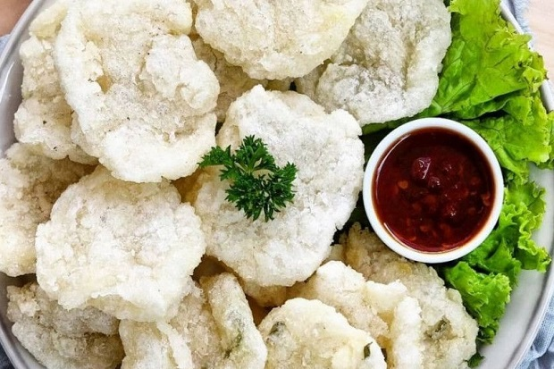

Nayla Sabilah
Batam, 07 Agustus 2007
üìç Kampung Tua Belian
Halo! Saya Nayla, seorang pelajar di smkn 7 batam, , saya suka menonton, saya suka banget sama buah durian dan matoa !
Hubungi Sayakue kesukaan
pancake durian
Pancake durian adalah makanan ringan yang terbuat dari puree daging durian dan vla atau krim kocok yang dibalut dengan kulit krepes atau dadar gulung. Pancake durian memiliki aroma khas dan tekstur krim yang legit.

lemper isi ayam
Lemper ayam adalah makanan tradisional Indonesia yang terbuat dari ketan yang diisi dengan daging ayam suwir berbumbu dan dibungkus daun pisang.

cireng
Cireng adalah jajanan khas Sunda yang terbuat dari adonan tepung tapioka yang digoreng. Cireng memiliki tekstur renyah di luar dan lembut di dalam.